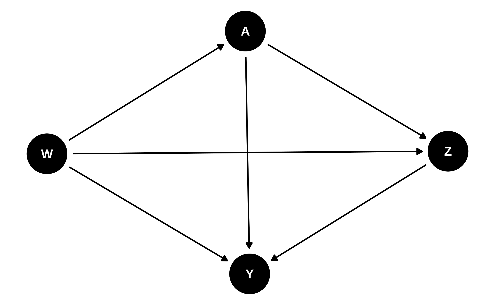

11 인과 매개 분석
Nima Hejazi
tmle3mediate R 패키지를 활용합니다.
Note학습 목표
- 치료 후 매개 변수의 존재가 인과 분석을 어떻게 복잡하게 만들 수 있는지, 그리고 이러한 복잡성을 해결하기 위해 직접 효과와 간접 효과를 어떻게 정의할 수 있는지 조사합니다.
- 확률적 중재의 관점에서 정의를 포함하여, 직접 인과 효과와 간접 인과 효과 사이의 본질적인 유사점과 차이점을 설명합니다.
- 직접 및 간접 효과를 정의하는 데 필요한 합동 중재(joint interventions)를 총 인과 효과를 산출하는 정적, 동적 및 확률적 중재와 차별화합니다.
- 자연적 직접 및 간접 효과의 식별에 필요한 가정과 이러한 효과 정의의 한계를 설명합니다.
tmle3mediateR패키지를 사용하여 이분형 치료에 대한 자연적 직접 및 간접 효과를 추정합니다.- 확률적 중재의 인구 중재 직접 및 간접 효과를 자연적 직접 및 간접 효과와 차별화하고, 식별에 필요한 가정의 차이점을 포함합니다.
tmle3mediateR패키지를 사용하여 이분형 치료의 인구 중재 직접 효과를 추정합니다.
11.1 인과 매개 분석
생물학 및 역학에서 경제학 및 심리학에 이르는 다양한 응용 분야에서 과학적 탐구는 종종 치료가 두 변수 사이의 특정 경로를 통해서만 결과 변수에 미치는 효과를 확인하는 것과 관련이 있습니다. 노출에 의해 영향을 받는 치료 후 중간 변수(즉, 매개체)가 존재하는 경우, 경로 특정 효과(path-specific effects)를 통해 이러한 복잡하고 기계론적 관계를 분석할 수 있습니다. 이러한 인과 효과는 매우 광범위한 관심을 끌고 있어 그 정의와 식별은 거의 한 세기 동안 통계학의 연구 대상이 되어 왔습니다. 실제로 현대적 인과 매개 분석의 초기 사례는 경로 분석(path analysis)에 관한 연구(Wright 1934)로 거슬러 올라갈 수 있습니다. 최근 수십 년 동안 잠재적 결과(potential outcomes) 및 비파라메트릭 구조 방정식 모델링 프레임워크 모두에서 새로운 직접 및 간접 효과의 공식화에 대한 관심이 다시 높아졌습니다(Robins 1986; Pearl 1995, 2009; Spirtes et al. 2000; Dawid 2000). 일반적으로 간접 효과(indirect effect, IE)는 매개 변수를 통해 작용하는 것으로 밝혀진 총 효과의 부분인 반면, 직접 직접 효과(direct effect, DE)는 치료가 결과에 직접 미치는 효과와 매개체를 명시적으로 포함하지 않는 모든 경로를 통한 효과를 포함하여 총 효과의 나머지 모든 구성 요소를 아우릅니다. 직접 및 간접 효과에 의해 전달되는 기계론적 지식은 치료가 왜 그리고 어떻게 효과가 있는지에 대한 이해를 높이는 데 사용될 수 있습니다.
인과 추론에 대한 현대적 접근 방식은 전통적인 경로 분석의 방법론을 크게 발전시켜 파라메트릭 모델링 접근 방식의 사용으로 인한 중대한 제한 사항을 극복할 수 있게 해주었습니다(T. VanderWeele 2015). 서로 다른 프레임워크를 사용하여 Robins and Greenland (1992) 와 Pearl (2001) 는 평균 치료 효과를 자연적 직접 및 간접 효과로 비파라메트릭하게 분해하는 방법을 동일하게 제공했습니다. T. VanderWeele (2015) 은 고전적 인과 매개 분석에 대한 포괄적인 개요를 제공합니다. 우리는 대안적인 관점을 제공하며, 대신 최근에야 나타난 이러한 수치들의 효율적 추정기 구축(Tchetgen Tchetgen and Shpitser 2012; Zheng and van der Laan 2012)과 확률적 중재에 기반한 보다 유연한 직접 및 간접 정의(Dı́az and Hejazi 2020)에 초점을 맞춥니다.
11.2 데이터 구조 및 표기법
이제 각 관찰 단위에 대해 약간 더 복잡한 데이터 구조 \(O = (W, A, Z, Y)\)를 고려하는 익숙한 \(n\)개 단위 표본 \(O_1, \ldots, O_n\)으로 돌아가 보겠습니다. 이전과 마찬가지로 \(W\)는 관찰된 공변량 벡터, \(A\)는 이분형 또는 연속형 치료, \(Y\)는 이분형 또는 연속형 결과를 나타냅니다. 새로운 치료 후 변수 \(Z\)는 (잠재적으로 다변량인) 매개체 집합을 나타냅니다. 배경 과학 지식에 의해 뒷받침되지 않는 가정을 피하기 위해, 우리는 데이터 생성 분포 \(P_0\)의 형태에 어떠한 가정도 두지 않는 비파라메트릭 통계 모델 \(\M\)에 대해 \(O \sim P_0 \in \M\)라고 가정합니다.
이전 장들에서와 같이, 구조적 인과 모델(SCM) (Pearl 2009)은 반사실적 변수의 정의를 공식화하는 데 도움이 됩니다: \[\begin{align} W &= f_W(U_W) \\ \nonumber A &= f_A(W, U_A) \\ \nonumber Z &= f_Z(W, A, U_Z) \\ \nonumber Y &= f_Y(W, A, Z, U_Y). (\#eq:npsem-mediate) \end{align}\] 이 방정식 세트는 관찰된 데이터 \(O\)를 생성하는 기계론적 모델을 구성하며, 나아가 SCM은 몇 가지 기본적인 가정을 인코딩합니다. 첫째, 암시적인 시간적 순서가 있습니다: \(W\)가 먼저 발생하며 외생적 요인 \(U_W\)에만 의존합니다. 그다음 \(A\)는 \(W\)와 외생적 요인 \(U_A\)를 기반으로 발생합니다. 그다음 매개체 \(Z\)가 오는데, 이는 \(A, W\) 및 또 다른 외생적 요인 집합 \(U_Z\)에 의존합니다. 마지막으로 결과 \(Y\)가 나타납니다. 우리는 외생적 요인 집합 \(\{U_W, U_A, U_Z, U_Y\}\)에 접근할 수 없으며 결정론적 생성 함수 \(\{f_W, f_A, f_Z, f_Y\}\)의 형태도 알지 못한다고 가정합니다. 실제로는 데이터 생성 실험에 대해 사용 가능한 모든 지식이 이 모델에 통합되어야 합니다. 예를 들어, 무작위 대조 시험(RCT)의 데이터인 경우 \(f_A\)의 형태가 알려져 있을 수 있습니다. SCM은 다음 DAG에 대응합니다:
데이터 \(O\)의 가능성(likelihood)을 분해함으로써, 특정 관찰값 \(o\)에 대해 평가된 곱 측정(product measure)에 대한 \(O\)의 밀도인 \(p_0\)를 몇 가지 직교 구성 요소의 항으로 표현할 수 있습니다: \[\begin{align} p_0(o) = &q_{0,Y}(y \mid Z = z, A = a, W = w) \\ \nonumber &q_{0,Z}(z \mid A = a, W = w) \\ \nonumber &g_{0,A}(a \mid W = w) \\ \nonumber &q_{0,W}(w).\\ \text{} (\#eq:likelihood-factorization-mediate) \end{align}\] 식 @ref(eq:likelihood-factorization-mediate)에서 \(q_{0, Y}\)는 \(\{Z, A, W\}\)가 주어졌을 때 \(Y\)의 조건부 밀도이고, \(q_{0, Z}\)는 \(\{A, W\}\)가 주어졌을 때 \(Z\)의 조건부 밀도이며, \(g_{0, A}\)는 \(W\)가 주어졌을 때 \(A\)의 조건부 밀도, \(q_{0, W}\)는 \(W\)의 주변 밀도입니다. 편의와 표기법의 일관성을 위해 \(\overline{Q}_Y(Z, A, W) := \E[Y \mid Z, A, W]\) 및 \(g(A \mid W) := \P(A \mid W)\) (즉, 성향 점수)로 정의하겠습니다.
우리는 노출에 의해 영향을 받는 매개체-결과 관계의 잠재적 교란 요인(즉, \(A\)에 의해 영향을 받고 \(Z\)와 \(Y\) 모두에 영향을 미치는 변수)을 명시적으로 제외했습니다. 이러한 변수가 존재하는 경우의 매개 분석은 매우 어렵습니다 (Avin, Shpitser, and Pearl 2005). 따라서 인과적 직접 및 간접 효과의 정의를 개발하려는 대부분의 노력은 이러한 교란 요인이 없음을 명시적으로 가정합니다. 추가적인 가정이 없다면, 이러한 교란이 있는 경우 일반적인 매개 매개변수(자연적 직접 및 간접 효과)를 식별할 수 없습니다. 하지만 Tchetgen Tchetgen and VanderWeele (2014) 은 연구 중인 시스템에 대한 과학적 지식에 의해 정당화될 때 유용할 수 있는 단조성 가정을 논의합니다. 관심 있는 독자는 최근 급격히 성장하고 있는 인과 매개 분석 문헌의 성과인 중재적(interventional) 직접 및 간접 효과 (Didelez, Dawid, and Geneletti 2006; T. J. VanderWeele, Vansteelandt, and Robins 2014; Lok 2016; Vansteelandt and Daniel 2017; Rudolph et al. 2017; Nguyen, Schmid, and Stuart 2019)를 참고할 수 있습니다. 이들의 식별은 이러한 복잡한 형태의 치료 후 교란에 강건합니다. 이 흐름의 문헌 내에서 Dı́az et al. (2020) 및 Benkeser and Ran (2021) 은 비파라메트릭 효과 분해 및 효율성 이론에 대한 고찰을 제공하며, Hejazi et al. (2022) 은 확률적 중재를 활용하는 새로운 부류의 효과를 공식화합니다.
11.3 자연적 직접 및 간접 효과의 정의
11.3.1 평균 치료 효과의 분해
자연적 직접 및 간접 효과는 ATE의 분해에서 발생합니다: \[\begin{align*} \E[Y(1) - Y(0)] = &\underbrace{\E[Y(1, Z(0)) - Y(0, Z(0))]}_{\text{NDE}} \\ &+ \underbrace{\E[Y(1, Z(1)) - Y(1, Z(0))]}_{\text{NIE}}. \end{align*}\] 특히, 자연적 간접 효과(natural indirect effect, NIE)는 매개체 \(Z\)를 통한 치료 \(A \in \{0, 1\}\)가 결과 \(Y\)에 미치는 효과를 측정하며, 자연적 직접 효과(natural direct effect, NDE)는 다른 모든 경로를 통한 치료가 결과에 미치는 효과를 측정합니다. 자연적 직접 및 간접 효과의 식별에는 다음과 같은 검증 불가능한 인과적 가정이 필요합니다. 우리가 고려하는 SCM이 독립적이고 동일하게 분포된(iid) 단위만을 생성하도록 제한되어 있고, 반사실이 유도된 수치이기 때문에(잠재적 결과 프레임워크에서의 원시 수치와 반대됨) 일관성과 간섭 부재(전통적으로 SUTVA (Rubin 1978, 1980))라는 표준 가정이 성립한다는 점에 유의하십시오. Pearl (2010) 는 후자의 지점에 대해 영감을 주는 논의를 제공합니다.
처음 세 가지 가정은 더 단순한 설정의 대응물들을 통해 익숙할 수 있지만, 교차 세계 독립성 요건은 자연적 직접 및 간접 효과의 식별에 고유한 것입니다. 이 가정은 이러한 경로 특정 효과의 식별에 있어 까다로운 복잡성을 해결하는데, Avin, Shpitser, and Pearl (2005) 는 이를 “위증하는 증인(recanting witness)”이라 명명하고 이 가정과 동등한 그래픽적 해결책을 도입했습니다. 서로 다른 중재에 의해 지표화된 반사실들의 이러한 독립성은 사실 이러한 효과 정의의 과학적 관련성에 대한 심각한 제한입니다. 왜냐하면 이는 무작위 시험에서도 NDE와 NIE를 식별할 수 없게 만들고 (Robins and Richardson 2010), 대응하는 과학적 주장이 실험을 통해 허위임을 입증할 수 없음을 의미하며 (Popper 1934; Dawid 2000), 결과적으로 과학적 방법의 기초적인 기둥과 직접적으로 모순되기 때문입니다.
이 마지막 가정을 약화시키려는 많은 시도가 있었지만 (Petersen, Sinisi, and van der Laan 2006; Imai, Keele, and Yamamoto 2010; Vansteelandt, Bekaert, and Lange 2012; Vansteelandt and VanderWeele 2012), 이러한 결과들은 엄격한 모델링 가정을 부과하거나, 자연적 효과에 대한 대안적인 해석을 제안하거나, 더 쉽게 충족될 수 있는 조건을 개발함으로써 제한된 수준의 추가적인 유연성만을 제공합니다. 예를 들어, Petersen, Sinisi, and van der Laan (2006) 은 이 가정이 (별개의 반사실이 아닌) 조건부 평균에 대해서만 요구되도록 약화시키고, 자연적 직접 효과를 또 다른 유형의 직접 효과인 통제된 직접 효과(controlled direct effect)의 가중 평균으로 보는 관점을 채택합니다. 의욕 있는 독자는 이러한 세부 사항을 독립적으로 더 조사해 볼 수 있습니다. 다음으로 우리는 현대의 인과 매개 분석 응용 분야에서 여전히 널리 사용되는 NDE와 NIE의 추정을 검토합니다.
11.3.2 Estimating the Natural Direct Effect
The NDE is defined as \[\begin{align*} \psi_{\text{NDE}} =&~\E[Y(1, Z(0)) - Y(0, Z(0))] \\ =& \sum_w \sum_z [\underbrace{\E(Y \mid A = 1, z, w)}_{\overline{Q}_Y(A = 1, z, w)} - \underbrace{\E(Y \mid A = 0, z, w)}_{\overline{Q}_Y(A = 0, z, w)}] \\ &\times \underbrace{p(z \mid A = 0, w)}_{q_Z(Z \mid 0, w))} \underbrace{p(w)}_{q_W}, \end{align*}\] where the likelihood factors arise from a factorization of the joint likelihood: \[\begin{equation*} p(w, a, z, y) = \underbrace{p(y \mid w, a, z)}_{q_Y(A, W, Z)} \underbrace{p(z \mid w, a)}_{q_Z(Z \mid A, W)} \underbrace{p(a \mid w)}_{g(A \mid W)} \underbrace{p(w)}_{q_W}. \end{equation*}\]
NDE 추정 과정은 \(Z, A, W\)가 주어졌을 때 결과의 조건부 평균에 대한 추정치인 \(\overline{Q}_{Y, n}\)을 구축하는 것으로 시작됩니다. 이 조건부 평균의 추정치를 확보하면 \(\overline{Q}_Y(Z, 1, W)\)(\(A = 1\)로 설정) 및 \(\overline{Q}_Y(Z, 0, W)\)(\(A = 0\)로 설정)의 예측값을 손쉽게 얻을 수 있습니다. 우리는 이 조건부 평균들의 차이를 \(\overline{Q}_{\text{diff}} = \overline{Q}_Y(Z, 1, W) - \overline{Q}_Y(Z, 0, W)\)라고 부르며, 이는 데이터 분포의 기능적 매개변수일 뿐입니다. \(\overline{Q}_{\text{diff}}\)는 \(A\)의 대조에 따른 \(Y\)의 조건부 평균 차이를 포착합니다.
NDE의 표적 최우 추정기(TML estimator)를 구축하는 절차는 \(\overline{Q}_{\text{diff}}\) 자체를 보조 변수(nuisance parameter)로 취급하여, 대조군(\(A = 0\)이 관찰된 단위들) 사이에서 기본 공변량 \(W\)에 대해 그 추정치 \(\overline{Q}_{\text{diff}, n}\)을 회귀합니다. 이 단계의 목표는 공변량 \(W\)가 시간상 매개체 \(Z\)보다 앞서기 때문에 \(\overline{Q}_{\text{diff}}\)에 미치는 \(Z\)의 주변 영향을 일부 제거하는 것입니다. 대조군 사이에서 이 차이를 \(W\)에 대해 회귀하면, 모든 개인이 대조군 상태(\(A = 0\))에 있는 설정 하에서 기대되는 \(\overline{Q}_{\text{diff}}\)를 복구하게 됩니다. \(\overline{Q}_{\text{diff}}\)에 대한 \(Z\)의 잔차 가법적 효과는 매개체 \(Z\)를 설명하는 보조(또는 “영리한(clever)”) 공변량을 사용하여 TML 추정 단계에서 제거됩니다. 이 보조 공변량은 다음과 같은 형태를 가집니다:
\[\begin{equation*} C_Y(q_Z, g)(O) = \Bigg\{\frac{\mathbb{I}(A = 1)}{g(1 \mid W)} \frac{q_Z(Z \mid 0, W)}{q_Z(Z \mid 1, W)} - \frac{\mathbb{I}(A = 0)}{g(0 \mid W)} \Bigg\} \ . \end{equation*}\] 이를 분해해 보면, \(\mathbb{I}(A = 1) / g(1 \mid W)\)는 \(A = 1\)에 대한 역 성향 점수 가중치이고, 마찬가지로 \(\mathbb{I}(A = 0) / g(0 \mid W)\)는 \(A = 0\)에 대한 역 성향 점수 가중치입니다. 중간 항은 대조(\(A = 0\)) 및 치료(\(A = 1\)) 조건 하에서 매개체의 조건부 밀도 비율입니다(참고: 위에서 논의한 매개체 양의 조건을 기억하십시오).
조건부 밀도 비율이 미묘하게 등장하는 것은 우려스러운 부분입니다. 불행히도 통계 문헌에서 이러한 수치들을 추정하는 도구는 드물며(Dı́az and van der Laan 2011; Hejazi, Benkeser, and van der Laan 2022), \(Z\)가 고차원인 경우 문제는 더욱 복잡해지고(계산 비용도 많이 듭니다) 집니다. 이러한 조건부 밀도의 비율만 필요하므로, 다음과 같이 편리한 재매개변수화(re-parametrization)를 달성할 수 있습니다: \[\begin{equation*} \frac{p(A = 0 \mid Z, W)}{g(0 \mid W)} \frac{g(1 \mid W)}{p(A = 1 \mid Z, W)} \ . \end{equation*}\] 앞으로 이 재매개변수화된 조건부 확률 기능어를 \(e(A \mid Z, W) := p(A \mid Z, W)\)라고 표기하겠습니다. 유사한 맥락에서 Zheng and van der Laan (2012), Tchetgen Tchetgen (2013), Dı́az and Hejazi (2020), Dı́az et al. (2020) 및 (hejazi2021nonparametric에?) 의해 동일한 재매개변수화 기법이 사용되었습니다. 이 공식화는 추정 문제를 오직 조건부 평균의 추정만 필요로 하는 문제로 축소하여, 앞서 논의한 바와 같이 광범위한 머신러닝 알고리즘을 사용할 수 있는 길을 열어준다는 점에서 특히 유용합니다.
내부적으로는 평균 결과 차이 \(\overline{Q}_{\text{diff}}\)와 \(Z, W\)가 주어졌을 때 \(A\)의 조건부 확률인 \(e(A \mid Z, W)\)가 TML 추정을 위한 보조 공변량을 구축하는 데 사용됩니다. 이러한 보조 변수들은 TML 추정 절차의 편향 수정 업데이트 단계에서 중요한 역할을 합니다.
11.3.3 자연적 간접 효과의 추정
NIE의 도출과 추정은 NDE의 경우와 유사합니다. NIE는 오직 매개체 \(Z\)를 통한 \(A\)의 \(Y\)에 대한 효과임을 상기하십시오. \(\E(Y(Z(1), 1) - \E(Y(Z(0), 1)\)로 표현될 수 있는 이 반사실적 수치는, \(A = 1\) 및 \(Z(1)\)(\(A = 1\) 하에서 매개체가 취할 값)이 주어졌을 때의 \(Y\)의 조건부 평균과 \(A = 1\) 및 \(Z(0)\)(\(A = 0\) 하에서 매개체가 취할 값)이 주어졌을 때의 \(Y\)의 조건부 기댓값 사이의 차이에 대응합니다.
NDE와 마찬가지로, 추정 과정에서 \(q_Z(Z \mid A, W)\)를 \(e(A \mid Z, W)\)로 대체하기 위해 재매개변수화를 사용할 수 있으며, 이를 통해 잠재적으로 다변량인 조건부 밀도의 추정을 피할 수 있습니다. 그러나 이 경우, 이전에 대조군(\(A = 0\)이 관찰된 단위들) 사이에서 \(\overline{Q}_{\text{diff}}\)를 \(W\)에 대해 회귀하여 계산했던 매개된 평균 결과 차이는 2단계 프로세스로 대체됩니다. 먼저, \(A = 1\)일 때 \(Z, W\)가 주어졌을 때 \(Y\)의 조건부 평균인 \(\overline{Q}_Y(Z, 1, W)\)를 치료군(\(A = 1\)이 관찰된 단위들) 사이에서 \(W\)에 대해 회귀합니다. 그런 다음 동일한 수치 \(\overline{Q}_Y(Z, 1, W)\)를 다시 \(W\)에 대해 회귀하되, 이번에는 대조군(\(A = 0\)이 관찰된 단위들) 사이에서만 수행합니다. 데이터 분포의 이 두 기능어의 평균 차이가 NIE의 유효한 추정기가 됩니다. 이는 \(Z\)에 미치는 효과를 통해 \((W, A = 1, Z)\)가 주어졌을 때 \(Y\)의 조건부 평균에 미치는 치료의 가법적 주변 효과로 생각할 수 있습니다. 따라서 NIE의 경우, 우리의 추정 대상 \(\psi_{\text{NIE}}\)는 다르지만, NDE의 효율적 추정기를 구축하는 데 유용했던 동일한 추정 기법이 사용됩니다.
11.3.4 인구 중재 직접 및 간접 효과
때때로 자연적 직접 및 간접 효과는 너무 제한적일 수 있습니다. 이러한 효과 정의는 정적 중재(즉, \(A = 0\) 또는 \(A = 1\)로 설정)를 기반으로 하는데, 이는 실제 세계의 중재로는 비현실적일 수 있기 때문입니다. 이러한 경우 대신 유연한 확률적 중재의 효과를 분해하는 인구 중재 직접 효과(population intervention direct effect, PIDE)와 인구 중재 간접 효과(population intervention indirect effect, PIIE)로 눈을 돌릴 수 있습니다 (Dı́az and Hejazi 2020).
이전에 연속형 치료에 대해 어떻게 중재할 것인지를 고려할 때 확률적 중재에 대해 논의한 바 있습니다. 그러나 이러한 중재 계획은 모든 형태의 치료 변수에 적용될 수 있습니다. 이분형 치료를 다루기에 적합한 특정 유형의 확률적 중재는 (kennedy2019nonparametric에?) 의해 처음 제안된 증분 성향 점수 중재(incremental propensity score intervention, IPSI)입니다. 이러한 중재는 관찰된 단위의 치료 수준을 고정된 값으로 결정론적으로 설정(예: \(A = 1\))하는 것이 아니라, 각 개인에 대해 치료를 받을 확률(odds)을 고정된 양(\(0 \leq \delta \leq \infty\))만큼 변경합니다. 구체적으로, 이 중재는 다음과 같은 형태를 가집니다: \[\begin{equation*} g_{\delta}(1 \mid w) = \frac{\delta g(1 \mid w)}{\delta g(1 \mid w) + 1 - g(1\mid w)}, \end{equation*}\] 여기서 스칼라 \(0 < \delta < \infty\)는 치료를 받을 확률의 변화를 지정합니다. 인과 매개 분석의 맥락에서 Dı́az and Hejazi (2020) 이 설명했듯이, PIDE와 PIIE에 필요한 식별 가정은 NDE와 NIE에 필요한 가정보다 훨씬 관대합니다. 이러한 식별 가정은 다음과 같습니다. 중요한 점은, 교차 세계 반사실적 독립성 가정이 전혀 필요하지 않다는 것입니다.
11.3.5 Decomposing the Population Intervention Effect
We may decompose the population intervention effect (PIE) in terms of the population intervention direct effect (PIDE) and the population intervention indirect effect (PIIE): \[\begin{equation*} \mathbb{E}\{Y(A_\delta)\} - \mathbb{E}Y = \overbrace{\mathbb{E}\{Y(A_\delta, Z(A_\delta)) - Y(A_\delta, Z)\}}^{\text{PIIE}} + \overbrace{\mathbb{E}\{Y(A_\delta, Z) - Y(A, Z)\}}^{\text{PIDE}}. \end{equation*}\]
This decomposition of the PIE as the sum of the population intervention direct and indirect effects has an interpretation analogous to the corresponding standard decomposition of the average treatment effect. In the sequel, we will compute each of the components of the direct and indirect effects above using appropriate estimators as follows
- For \(\E\{Y(A, Z)\}\), the sample mean \(\frac{1}{n}\sum_{i=1}^n Y_i\) is consistent;
- for \(\E\{Y(A_{\delta}, Z)\}\), a TML estimator for the effect of a joint intervention altering the treatment mechanism but not the mediation mechanism, based on the proposal in Dı́az and Hejazi (2020); and,
- for \(\E\{Y(A_{\delta}, Z_{A_{\delta}})\}\), an efficient estimator for the effect of a joint intervention on both the treatment and mediation mechanisms, as per Kennedy (2019).
11.3.6 효과 분해 항의 추정
Dı́az and Hejazi (2020) 이 설명했듯이, PIDE와 PIIE에 모두 나타나는 분해 항 \(\E\{Y(A_{\delta}, Z)\}\)(매개 기전은 고정된 상태로 유지하면서 치료 기전을 변경하는 것에 대응함)를 식별하는 통계적 기능어는 다음과 같습니다: \[\begin{equation*} \psi_0(\delta) = \int \overline{Q}_{0,Y}(a, z, w) g_{0,\delta}(a \mid w) p_0(z, w) d\nu(a, z, w), \end{equation*}\] 이에 대해서는 TML 추정기를 사용할 수 있습니다. \(A \in \{0, 1\}\)인 경우, 비파라메트릭 통계 모델 \(\mathcal{M}\)에 대한 효율적 영향 함수(efficient influence function, EIF)는 \(D_{\delta}(o) = D^Y_{\delta}(o) + D^A_{\delta}(o) + D^{Z,W}_{\delta}(o) - \psi(\delta)\)이며, 여기서 EIF의 직교 구성 요소는 다음과 같이 정의됩니다:
- \(D^Y_{\delta}(o) = \{g_{\delta}(a \mid w) / e(a \mid z, w)\} \{y - \overline{Q}_{Y}(z,a,w)\}\),
- \(D^A_{\delta}(o) = \{\delta\phi(w) (a - g(1 \mid w))\} / \{(\delta g(1 \mid w) + g(0 \mid w))^2\}\)이며, 여기서 \(\phi(w) := \E\{\overline{Q}_{Y}(1, Z, W) - \overline{Q}_{Y}(0, Z, W) \mid W = w\}\)입니다.
- \(D^{Z,W}_{\delta}(o) = \int_{\mathcal{A}} \overline{Q}_{Y}(z, a, w) g_{\delta}(a \mid w) d\kappa(a)\).
TML 추정기는 EIF 추정 방정식을 풀기 위해 보조 변수의 초기 추정치를 변동(fluctuating)시켜 계산할 수 있습니다. 결과적인 TML 추정기는 다음과 같습니다: \[\begin{equation*}
\psi_{n}^{\star}(\delta) = \int_{\mathcal{A}} \frac{1}{n} \sum_{i=1}^n
\overline{Q}_{Y,n}^{\star}(Z_i, a, W_i)
g_{\delta, n}^{\star}(a \mid W_i) d\kappa(a),
\end{equation*}\] 여기서 \(g_{\delta,n}^{\star}(a \mid w)\)와 \(\overline{Q}_{Y,n}^{\star}(z,a,w)\)는 각각 성적 방정식 \(n^{-1} \sum_{i=1}^n D^A_{\delta}(O_i) = 0\) 및 \(n^{-1} \sum_{i=1}^n D^Y_{\delta}(O_i) = 0\)의 해를 향해 초기 보조 변수 추정치를 변동(또는 틸팅)시키는 표적(targeting) 회귀에 의해 생성됩니다. 이 TML 추정기 \(\psi_{n}^{\star}(\delta)\)는 tmle3mediate 패키지에 구현되어 있습니다. 다음의 코드 예제들을 통해 TML 추정기를 사용하여 \(\E\{Y(A_{\delta}, Z)\}\)를 구하는 tmle3mediate의 사용법을 보여드립니다.
11.4 직접 및 간접 효과의 평가
이제 이전 장들에서 소개된 WASH Benefits 데이터를 사용하여 자연적 직접 및 간접 효과와 인구 중재 직접 효과를 추정해 보겠습니다. 먼저 데이터를 로드합니다:
library(data.table)
library(sl3)
library(tmle3)
library(tmle3mediate)
# 데이터 다운로드
washb_data <- fread(
paste0(
"https://raw.githubusercontent.com/tlverse/tlverse-data/master/",
"wash-benefits/washb_data.csv"
),
stringsAsFactors = TRUE
)
# 중재 노드를 이분형으로 만들고 하위 샘플링
washb_data <- washb_data[sample(.N, 600), ]
washb_data[, tr := as.numeric(tr != "Control")]다음으로 NPSEM의 기본 공변량 \(W\), 치료 \(A\), 매개체 \(Z\), 결과 \(Y\) 노드를 “노드 리스트” 객체를 통해 정의합니다:
node_list <- list(
W = c(
"momage", "momedu", "momheight", "hfiacat", "Nlt18", "Ncomp", "watmin",
"elec", "floor", "walls", "roof"
),
A = "tr",
Z = c("sex", "month", "aged"),
Y = "whz"
)여기서 node_list는 각 노드의 부모 노드를 인코딩합니다. 예를 들어, \(Z\)(매개체)의 부모는 \(A\)(치료)와 \(W\)(기본 교란 요인)이며, \(Y\)(결과)의 부모는 \(Z, A, W\)입니다. 또한 process_missing을 호출하여 데이터의 결측치를 처리합니다:
processed <- process_missing(washb_data, node_list)
washb_data <- processed$data
node_list <- processed$node_list이제 널리 사용되는 몇 가지 머신러닝 알고리즘을 사용하여 앙상블 학습기를 구축합니다:
# 연속형 데이터(보조 변수 Z)에 사용되는 SL 학습기
enet_contin_learner <- Lrnr_glmnet$new(
alpha = 0.5, family = "gaussian", nfolds = 3
)
lasso_contin_learner <- Lrnr_glmnet$new(
alpha = 1, family = "gaussian", nfolds = 3
)
fglm_contin_learner <- Lrnr_glm_fast$new(family = gaussian())
mean_learner <- Lrnr_mean$new()
contin_learner_lib <- Stack$new(
enet_contin_learner, lasso_contin_learner, fglm_contin_learner, mean_learner
)
sl_contin_learner <- Lrnr_sl$new(learners = contin_learner_lib)
# 이분형 데이터(이 경우 보조 변수 G 및 E)에 사용되는 SL 학습기
enet_binary_learner <- Lrnr_glmnet$new(
alpha = 0.5, family = "binomial", nfolds = 3
)
lasso_binary_learner <- Lrnr_glmnet$new(
alpha = 1, family = "binomial", nfolds = 3
)
fglm_binary_learner <- Lrnr_glm_fast$new(family = binomial())
binary_learner_lib <- Stack$new(
enet_binary_learner, lasso_binary_learner, fglm_binary_learner, mean_learner
)
sl_binary_learner <- Lrnr_sl$new(learners = binary_learner_lib)
# 치료 및 결과 기전 회귀를 위한 리스트 생성
learner_list <- list(
Y = sl_contin_learner,
A = sl_binary_learner
)11.4.1 자연적 간접 효과의 표적 추정
아래에서 NIE 계산을 시연합니다. 먼저 보조 변수 \(e(A \mid Z, W)\) 및 \(\psi_Z\)에 어떤 학습기를 사용할지 인코딩하는 “Spec” 객체를 인스턴스화하는 것으로 시작합니다. 그런 다음 데이터, 위에서 생성한 노드 리스트, 그리고 \(A\)와 \(Y\)를 기반으로 보조 변수를 추정하는 데 사용할 머신러닝 알고리즘을 나타내는 학습기 리스트와 함께 Spec 객체를 tmle3 함수에 전달합니다.
tmle_spec_NIE <- tmle_NIE(
e_learners = Lrnr_cv$new(lasso_binary_learner, full_fit = TRUE),
psi_Z_learners = Lrnr_cv$new(lasso_contin_learner, full_fit = TRUE),
max_iter = 1
)
washb_NIE <- tmle3(
tmle_spec_NIE, washb_data, node_list, learner_list
)
washb_NIE출력 결과에 따르면, 매개체(sex, month, aged)를 통한 치료의 간접 효과는 0.0입니다.
11.4.2 자연적 직접 효과의 표적 추정
NDE 추정에도 유사한 절차가 적용되며, NIE를 위한 Spec 객체를 NDE 보조 변수를 위한 학습기를 정의하는 tmle_spec_NDE로 교체하기만 하면 됩니다:
tmle_spec_NDE <- tmle_NDE(
e_learners = Lrnr_cv$new(lasso_binary_learner, full_fit = TRUE),
psi_Z_learners = Lrnr_cv$new(lasso_contin_learner, full_fit = TRUE),
max_iter = 1
)
washb_NDE <- tmle3(
tmle_spec_NDE, washb_data, node_list, learner_list
)
washb_NDE이를 통해, 매개체(sex, month, aged)를 포함하지 않는 모든 경로를 통한 치료의 직접 효과는 0.0이라는 결론을 내릴 수 있습니다. 자연적 직접 효과와 간접 효과의 추정치를 합하면 대략 평균 치료 효과(ATE)가 복구된다는 점에 유의하십시오. 즉, NDE와 NIE의 추정치에 기반한 ATE는 대략 0.0입니다.
11.4.3 인구 중재 직접 효과의 표적 추정
앞서 언급했듯이, 자연적 직접 및 간접 효과의 근저에 깔린 가정을 정당화하는 것은 어려울 수 있습니다. 또한 효과 정의 자체가 치료에 정적 중재를 적용하는 것에 의존하므로 유연성이 급격히 제한됩니다. 이분형 치료를 고려할 때, 증분 성향 점수 이동은 대안적인 유연한 확률적 중재 클래스를 제공합니다. 이제 치료를 받을 확률을 \(\delta = 3\)만큼 조절하는 IPSI를 사용하여 PIDE를 추정해 보겠습니다. 이러한 중재는 연구 참여자들이 치료를 받기로 선택하도록 권장하여 해당 치료를 받을 상대적 확률을 높이는 설계의 효과로 (가상적으로) 해석될 수 있습니다. 우리의 접근 방식을 예시하기 위해, 각 개인에 대해 치료를 받을 확률을 세 배(즉, \(\delta = 3\))로 높이는 동기 부여 중재를 가정해 보겠습니다:
12 IPSI 곱셈 이동(multiplicative shift) 설정
delta_ipsi <- 3
13 확률적 매개를 위한 tmle3 spec 인스턴스화
tmle_spec_pie_decomp <- tmle_medshift( delta = delta_ipsi, e_learners = Lrnr_cv\(new(lasso_binary_learner, full_fit = TRUE), phi_learners = Lrnr_cv\)new(lasso_contin_learner, full_fit = TRUE) )
14 TML 추정치 계산
washb_pie_decomp <- tmle3( tmle_spec_pie_decomp, washb_data, node_list, learner_list ) 앞서 설명한 분해를 바탕으로, PIDE는 \(\beta_{0,\text{PIDE}}(\delta) = \psi_0(\delta) - \E Y\)로 표기될 수 있음을 상기하십시오. 따라서 PIDE의 TML 추정기 \(\beta_{n,\text{PIDE}}(\delta)\)는 구성 매개변수들의 추정기의 합성으로 표현될 수 있습니다: \[\begin{equation*} \beta_{n,\text{PIDE}}({\delta}) = \psi^{\star}_{n}(\delta) - \frac{1}{n} \sum_{i = 1}^n Y_i. \end{equation*}\]
14.1 연습 문제
14.1.1 주요 개념 복습
Tip연습 문제 1
WASH Benefits 데이터셋을 살펴보고, 치료가 키 대비 몸무게 Z-점수(WHZ)에 미치는 효과의 잠재적 매개체 세트를 다르게 선택해 보세요. 이렇게 새로 선택한 매개체 세트(또는 단일 매개체)를 사용하여 자연적 직접 및 간접 효과를 추정해 보세요. 이러한 추정치에 대한 해석을 제공하세요.
Solution. 추후 제공 예정
Tip연습 문제 2
자연적 직접 효과와 간접 효과의 가법성(additivity)이 성립하는지 평가해 보세요. 위에서 추정된 자연적 직접 및 간접 효과를 사용하여 그 합이 ATE를 복구합니까?
Tip연습 문제
WASH Benefits 예제에서 자연적 직접 및 간접 효과의 식별에 필요한 가정이 타당한지 평가해 보세요. 특히 치료 및 매개체 양의 조건에 대한 경험적 진단 측면에서 이 평가를 수행하세요.
14.1.2 개념의 실전 적용
추후 제공 예정
Solution. 추후 제공 예정
추후 제공 예정
Solution. 추후 제공 예정